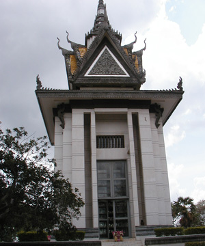
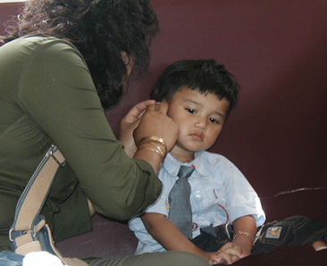
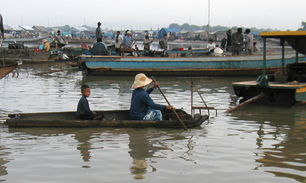
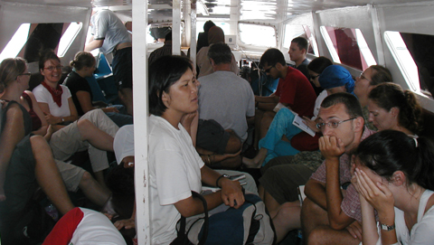
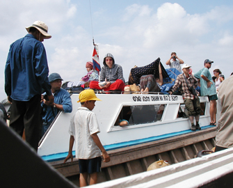
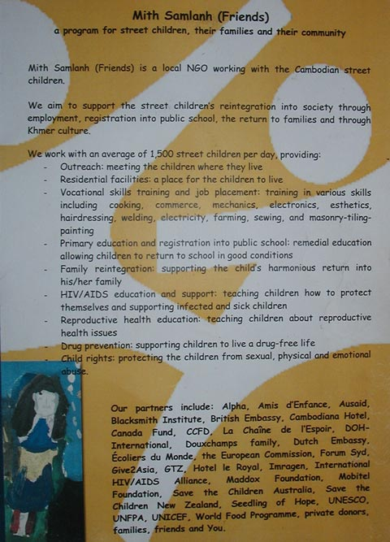
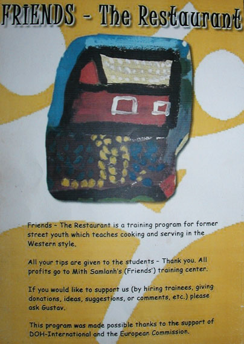
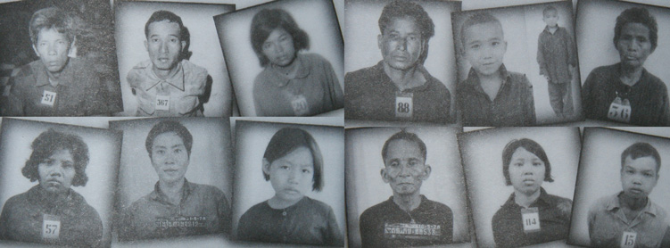
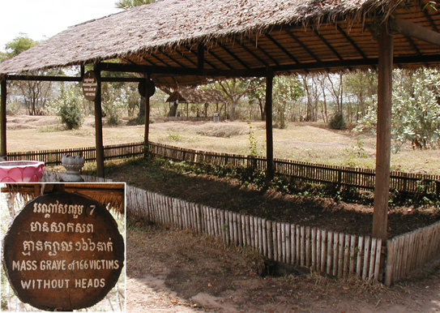

Cambodia Trav-E-Logs©
| Phnom Penh
Sent 11 May 2003 |
 |
| back: Siem Reap | Killing Fields Memorial, filled with skulls |
================================= Sometimes I think I was born in the wrong century. Travelling with Darwin, Marco Polo, or Magellan would have been fantastic! At a younger age would be better, although my body is holding out better than expected. Hope you're all enjoying life. =================================
April 28 - May 2, and 7 - 11, 2003
 Phnom Penh bound. Requested a wake-up call for 5:15 AM, as my alarm clock does not appear to work. I wake up at 5:30 AM, and fortunately checked my watch to see it was past time for the wake up call. After rushing through my shower and packing up, I'm out the door with three minutes to spare - or so I thought. Struggling down the stairs and through the deserted lobby with my full pack and day sack was easy compared to the obstacle at the front gate. It was locked, and my ride to the boat just pulled up. Now I had to go around and wake up the folks that didn't wake me up - just to let me out of the locked compound! I felt like a prisoner waking up the guards. I sure hope food is available at the dock.
The ride is a mini-pickup truck, and I'm directed to take my pack off and sit in the bed. We make our way to several other guesthouses to pick up a total of seven backpackers with full gear, heading to the dock for various destinations. We leave the last place at 6:45, but I still haven't seen a place to grab food for my growling stomach.
The way turns rural and swampy, and various flowers are seen from the pickup truck. I'd love to take pictures, but with all the bouncing around, it's too dangerous. I think many of the lotus plants are in bloom. The road gets smaller and smaller, and soon it's more of a path through the countryside. A backpacker mentions the large hill we are going by was used to quarry many of the sandstone blocks used in construction of the temples we have been admiring for the last three days. The path seems to end at a dock, but the few boats around are lying in the dried mud and listing to the side. Now the path gets real narrow through the tall reeds, at times touching both sides of the truck, and we hope nothing is coming from the other direction. Children heading to school scurry to the side as the truck bounces along. The dirt path is so rough, the children have lots of time to safely get out of harms way. We pass a school built on pontoons. Finally we reach the real end of the trail. There is no dock. This is how far the water of the Tonle Sap Lake recedes by the end of the dry season. If I were to make this same trip in September, the boats would be at the dock seen 15 minutes earlier.
 Possibly forty vehicles, mostly pickup trucks, have congregated here with passengers and cargo for the array of fishing and transport vessels at the "pier". People shouting orders, vendors trying to sell items, and other dock workers grabbing anything in sight. They don't get my backpack. The vessels in sight can carry no more than about 12 passengers, which adds to the confusion. Three destinations are served from this port, so it is important to be on the boat to the capital, Phnom Penh, and not one of the others. We are rushed onto these smaller waiting boats, and I wonder how long it will be to the "fast" boat. As the shuttle boat gets under way, things settle down and I'm able to take a few pictures. In no time at all, we reach a floating pier and board the "fast" boat, powered by three 200 HP Yamaha outboards. A soda is purchased from the pier as it is apparent the fast boat supplies transportation only. It is a heavy wooden boat, built with a shallow draft. The captain has difficulty starting the outboards; we all see mud being flung by the props digging the bottom.
 Two hours later we stop at a pier in the middle of the river, and wave to the returning sister "fast" boat stopped at the same pier. Actually, it's nothing more than some pilings in the river; designating a rendezvous location with a small boat carrying the rest of the fuel needed for our destination. Twelve 30-liter plastic jugs of gasoline are poured into a funnel while mixing 50:1 outboard motor oil in with the gasoline. Then the captain opens his toolbox and goes to work hammering the stainless prop on the center outboard back into some semblance of shape. Huge chunks are missing from the stainless prop. Still no food and I've been up 4 and a half hours. As the captain starts up the three outboards, he has the same problem keeping the center engine running, even though he does not dredge bottom this time.
The trip started near the north-western end of the Tonle Sap Lake - close to the town of Siem Reap, and the fantastic temple complexes often refereed to collectively as Angkor Wat. The re-fueling stop is made just as we enter the Tonle Sap River, the primary inlet and outlet for the lake by the same name. This is a very unusual river in that the flow is southeastward from the lake towards the Mekong River six months of the year, but northwesterly, filling up the lake during the rainy season. As the rainy season is about the start, it is now as low as it gets. The Tonle Sap is considered one of the world's richest sources of fresh water fish.
It's a four hour ride to Phnom Penh by fast boat ($25), or 12 to 15 hour ride by bus ($4). I'm told the road is worse than the road from the Thai boarder. There is a limit to roughing it. Besides, I was able to get a $3 discount, including transport to the dock. Last night, when checking out of the hotel, the manager told me his cousin operates the Royal Guest House in Phnom Penh. I had already noticed this in the Lonely Planet, and it was over my budget. He countered with the 'same price' as I'm paying in Siem Reap, and I would be met at the dock! I agreed.
The fast boat has 40-50 folks on board. Fortunately this is not overloaded, and certainly the reason we have an uneventful trip, unlike many, many stories I would hear over the next week or so. Sitting to my left is an Asian that has purchased what appears to be a musical instrument. I ask him about it, and he has a hard time speaking English. Turns out he is from Japan, so I get to practice. He's heading home after visiting China, Vietnam, and Cambodia. He just bought a traditional Khmer musical instrument, but did not get any lessons nor instructions. It was difficult to pack, so he did not want to unwrap it now. I'll try to get a picture of one and post it on my web page. It's a two-stringed instrument, with bow placed between the strings. I've got to try playing one on this trip. But right now I'm starved, so dig out the already opened bag of Trader Joe's sesame crackers and start munching. I pass the bag around, and get a few takers. Especially a young boy, maybe two years old, traveling with his mom. Out comes the camera and I get one super shot.
Sitting to my right is a group of four French backpackers. Jonathan, his sister Sabine and Vincent her boyfriend, and Sophie. Sophie is ethnically Vietnamese, born in Lao, and raised in France. Anyone who has studied the history of Indochina can easily understand this sequence. I will visit several places in Phnom Penh with them over the next few days. They are returning to the Royal Guest House in Phnom Penh, so I tell them we should have free transport waiting for us at the dock. How lucky can you get?
As you can imagine, our arrival at the dock in Phnom Penh creates mass confusion, with hawkers trying to tout their guesthouses, motorcycle guides offering trips, and dock workers unloading the cargo and backpacks. I'm one of the last off the boat, and see a waving sign with my name on it -- spelled correctly! My pack is the last one off the boat, and it is dry. What more could one want?
We are taken to the Royal Guest House, but actually I stay down the street at Royal #2. Toilet and shower are shared, but I have two outlets in the room, with window and geckos in the hallway. The location is pretty central for my needs. I guess the worst part is that the street is not paved, so one must always be careful walking, especially at night. Lots of dogs around.
Jonathan asks if I would like to join them for lunch, as they will be walking to the Friends restaurant just a few blocks away. It is staffed by former street kids learning the restaurant trade. Profits go to the training center, with tips going to the students (see images.) So mid-afternoon I have breakfast and lunch rolled together.
Several of the French living in Phnom Penh are volunteering with NGOs (non-Governmental Organization)s. "Pour un Sourire d'Enfant - For the Smile of a Kid" (PSE) is one that is involved with rescuing children from the dumps. The children may be taught remedial education to permit them back in school, or life skills to enable them to be gainfully employed. In the past, poor families have sent children to the dumps to collect anything that can be sold or recycled, thereby earning income for the family. PSE visits the dump sites early in the morning and sets up a kind of soup kitchen. Children (and parents if they can be located) are fed, simple health matters taken care of, and a team of evaluators decide the best approach for each child, considering factors such as age, perceived education level of the child, and needs of the parent and child. The parent is offered rice (to offset the reduced income) in return for the child's attendance. It seems to be such a great idea. PSE is a Cambodian registered entity, with goals of eventually becoming 100% Cambodian staffed. At present, skills taught are centered on restaurant and hotel operation and management, hair dressing, and clerical positions. PSE is about seven years old.
We all then take a 30-minute walk to the Tuol Sleng Museum, the former high school which became the infamous S-21 Security Prison interrogation center during Pol Pot's regime. Hundreds were tortured to death here, simply because they spoke a foreign language or wore spectacles; Hundreds of thousands were transported from here to the Killing Fields at Choeung Ek for extermination. Between 1 and 2 million Cambodians died between 1975 and 1978 as a result of the repressive Khmer Rouge led by Pol Pot.  1/7 of the population, dead. The museum has hundreds of photographs of victims lining the walls, and various torture paraphernalia. It's a sobering experience to visit such a place, where just 25 years ago, such atrocities took place. It made me stop and reminisce about that time period. Pol Pot was supported by the American Government, because he was anti-Communist and against the Vietnamese government in Hanoi.
During the next several days, trips are made to the Killing Fields, the Royal Palace with emerald Buddha and Silver Pagoda, Wat Phnom, the National museum, and main market to buy an alarm clock. Jonathan invites me to have dinner with him at the home of one of the French PSE volunteers teaching hairdressing. He cooks us a spaghetti dinner followed by Crepes for desert. The Indonesian embassy is visited to verify a rumor that the free 60-day visa is no longer given at border crossings. 
For $35 one may apply for a 30-day non-extendable visa. But sometimes travelers are still given the old 60-day visas at the border. This embassy only has a consular staff, and no immigration personal that decide such cases. I will probably take my chances at the border. If I can't get a 60-day visa, my trip plans will have to change considerably. Maybe I should head south after Laos, and leave Chang Mai, Chang Rai, and Myanmar for a more leisurely pace if I can't get a 60-day visa for Indonesia. I'm certainly not going to enter and exit Indonesia several times at $35 a pop. Logical entry points are from Malaysia and Singapore, but with SARS, the later is out of the question.
Bananas, pineapples, and mangos are the mainstay fruits. Bananas are much smaller than we see in the USA, maybe a third to a forth the size, but taste much better. A bunch, 14 to 30 small ones for $0.13 to $0.25. Some have rather thin skins. They sure are easy to carry and eat while traveling. Tried a fruit that looks like a giant green grapefruit. The vendor had cut three forths of the tough skin away and placed into a plastic sack for sale. The Pamelo cost $0.25 along the river front, in a high tourist area. The taste was closer to a grapefruit, but drier and not as sour. The hard part was separating the sections. This is one tough fruit. Conclusion: good, but not excellent. I would buy it again.
Next place visited was the beach area in Sihanoukville, after which more time was spent in Phnom Penh waiting for the Viet Nam visa date.
Bill
------------------------------"Travel is Fatal to Bigotry, Prejudice, and Narrow-minded ness" .... attributed to Mark Twain
| next: Sihanoukville |
| back: Siem Reap |